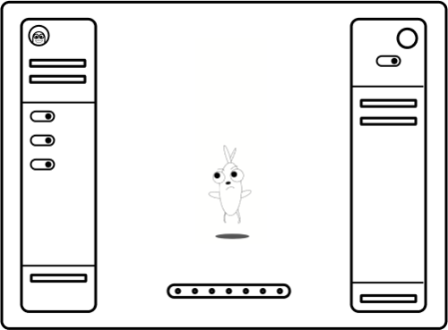
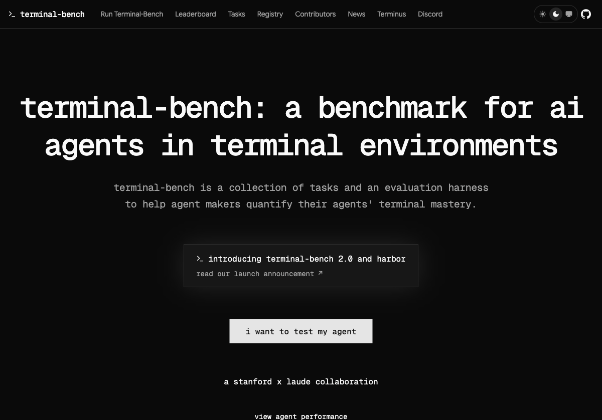

about cv skills
|
I am a data scientist with experience building ML systems at Stripe, Plaid, Capital One, and At-Bay spanning fraud detection, authentication, and cyber insurance pricing. I hold a PhD in cardiac systems biology from the University of Virginia, where I developed computational models and high-throughput imaging methods to study heart failure.
selected current projects
AI Safety Engineering Taskforce (ASET) - Developing evaluations for measuring LLM capabilities in ML research and healthcare.
AgileAI is a tool for accelarating software dev cycles.

Capes is an EdTech gaming platform where kids design and bring magical characters to life through game design tools.

Terminal Bench is a benchmark for AI agents in terminal environments. Contributed 3 tasks to the evaluation suite.
|
publications
Gene-protein-parameter mapping of altered genes in heart failureIntegration of human transcriptional profiles with computational models of β1-adrenergic signaling and EC coupling.
Modeling the effects of β1-adrenergic receptor blockers and polymorphisms on cardiac myocyte Ca2+ handlingβ-blockers are commonly used to treat heart failure but are still poorly understood. A systems pharmacology approach was used here to understand how β-blockers work.Automated image analysis of cardiac myocyte Ca2+ dynamicsCa2+ is a key link between the electrical and mechanical activity of the heart. A method is presented for high-throughput measurement, automated cell segmentation and signal analysis of Ca2+ in heart cells.
Cardiac models in drug discovery and development: a reviewThis article discusses how cellular models of electrophysiology, cell signaling, and metabolism have been used to investigate therapies for cardiac diseases including arrhythmia, ischemia, and heart failure.
Systems analysis of small signaling modulesUsing eight newly generated models, systems analysis of small protein signaling modules is shown to rapidly generate new quantitative knowledge from published experimental research. |